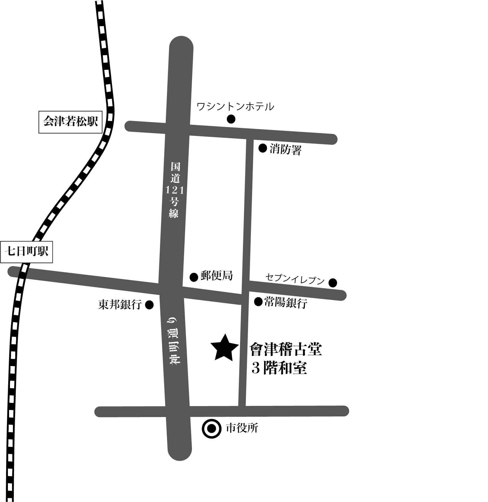
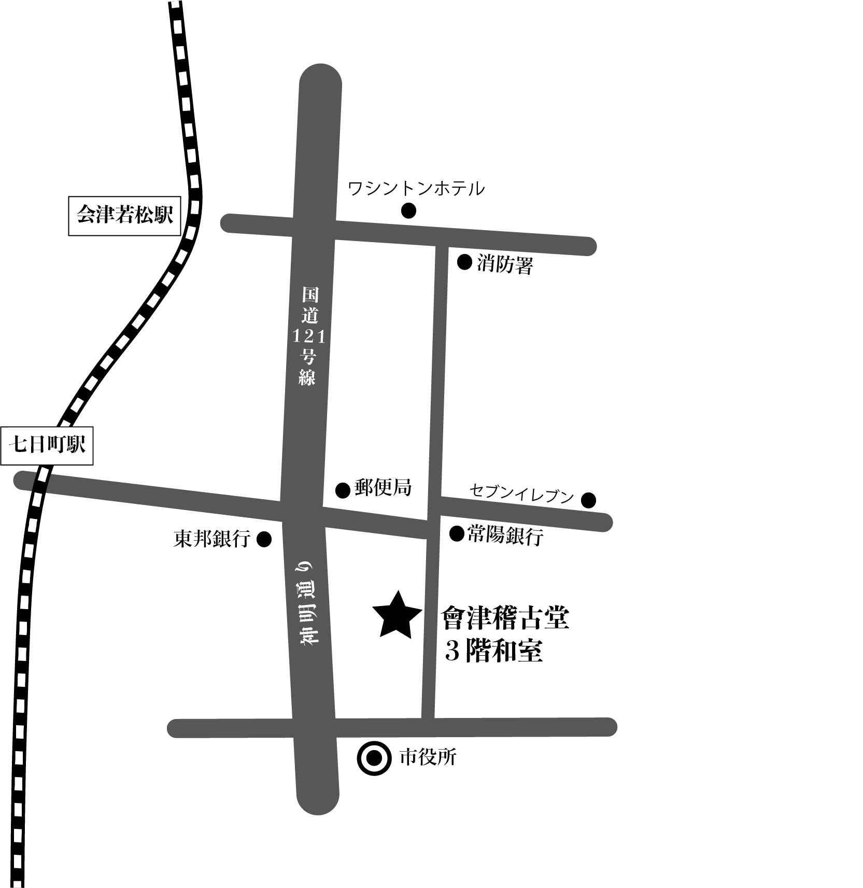

目的：会津のピアカウンセリングの活動を養護教論や教師をはじめとした学校関係者に知ってもらい、 ピアカウンセリングの活動を広めるため。
デザインについて：全体の構造や配置など担当しました。無料デザインツールCanvaを利用してデザインを行いました。印刷がモノクロということで写真を白背景に溶け込むようにしました。簡易マップはAdobe Illustratorを使って作成しました。
| ターゲット | 養護教諭、中学校教師、高校教師 |
|---|---|
| 雰囲気 | シンプル、楽しい |
| ツール | canva illustrator（簡易マップ） |